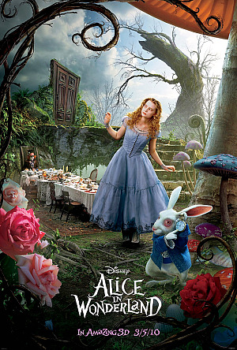

Minha comida favorita

Sou apaixonada por comida japonesa! Sempre escolho comer japa no meu aniversário e poderia comer todos os dias sem enjoar.
Meu hobby favorito
Adoro cantar e faço isso muito bem! É uma forma de expressar meus sentimentos e me divertir. Um talento que sempre me faz sentir viva.
Um lugar que quero conhecer
Meu sonho é conhecer Tulum, no México. Queria ter ido no meu aniversário de 15 anos, mas acabei indo para Punta Cana. Lá conheci mexicanos que me contaram que as praias são parecidas. Tulum ainda continua sendo meu sonho de viagem.
Filme favorito
Meu filme favorito é Alice no País das Maravilhas. Amo a fantasia e criatividade do filme, que me faz esquecer do mundo real por um tempo.
Cantor favorito

Meu cantor favorito é Luan Santana. Suas músicas passam sentimentos que eu realmente sinto. Já fui a um show dele e me emocionei muito!